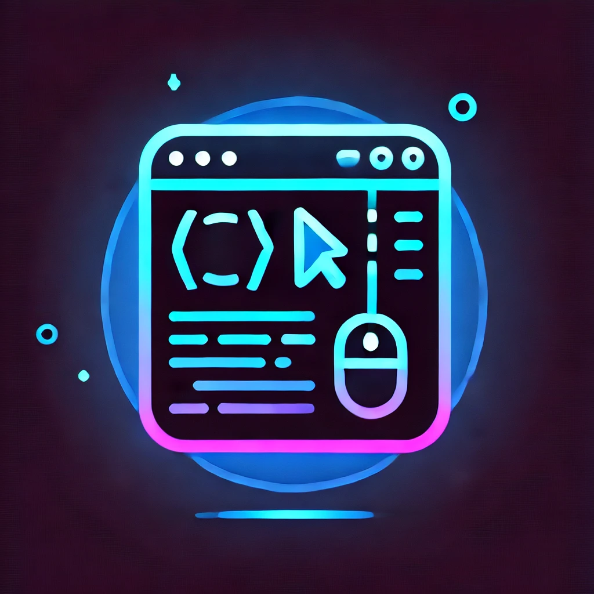

Juan David Tabarez Sanchez - Desarrollador Web
Bienvenidos a mi Portafolio
Mi nombre es Juan David Tabarez Sánchez como ya lo habrán visto arriba....
📍 Santiago de Cali, Colombia
💻 Desarrollador Web
💃 Instructor de Baile
Soy un apasionado por la programación y el baile, dos mundos que me permiten expresarme de formas únicas.
A mis 21 años, he encontrado en el desarrollo web una manera de crear e innovar
mientras que el baile me ha enseñado disciplina, creatividad y trabajo en equipo.
Como profesional, me destaco por ser:
detallista, carismático y comprensivo,
cualidades que aplico tanto en el desarrollo de proyectos como en el trabajo en equipo.
Me encanta aprender nuevas tecnologías, cocinar y disfrutar tiempo de calidad con mi hija, quien es mi mayor motivación.
Actualmente, estoy perfeccionando mis habilidades como desarrollador full stack,
enfocándome en construir soluciones digitales funcionales y atractivas.
Siempre estoy en busca de nuevos retos y oportunidades para crecer en el mundo del desarrollo web.
🎯 Objetivo:
Conseguir oportunidades remotas como desarrollador web y seguir expandiendo mis conocimientos en tecnología.
Mi Trayectoria en el Desarrollo Web:
De un Gato en CSS a una Tienda en Línea
Desde que empecé en el mundo del desarrollo web, cada proyecto ha sido una oportunidad para
aprender, experimentar y superarme.
Todo comenzó con un gato hecho únicamente con CSS,
un desafío que me mostró el poder del diseño sin necesidad de imágenes.
Fue mi primer acercamiento a las formas y sombras en el código,
y me hizo enamorarme de la creatividad dentro del desarrollo web.
Luego, decidí ir un paso más allá y creé un
horizonte de edificios que cambiaba entre el día y la noche dependiendo del tamaño de la pantalla.
Este proyecto me permitió comprender mejor los media queries y la adaptabilidad en diseño web.
A medida que exploraba más animaciones, desarrollé un pingüino que saluda con CSS y animaciones,
lo que me hizo profundizar en keyframes y efectos dinámicos en la interfaz.
Después de dominar el diseño y la animación,
di el salto a la programación con JavaScript, donde creé un juego de piedra, papel o tijera.
Aquí comprendí la lógica de programación, la manipulación del DOM y la interactividad con el usuario.
Hoy en día, estoy aplicando todo lo aprendido en mi mayor desafío hasta el momento:
una tienda en línea. Este proyecto reúne diseño, animaciones, interactividad y lógica de programación,
y me ha permitido expandir mis conocimientos en desarrollo full stack.
Cada proyecto ha sido un escalón en mi camino como desarrollador,
y estoy emocionado por lo que vendrá en el futuro.
Proyectos
LIA STORE
Tienda desarrollada con HTML, CSS, JAVASCRIPT, la puedes encontrar acá:
LIA STORE Ver Código en GitHubEl proyecto no es para un trabajar en línea como lo dice mi página, es para mi protafolio de lo que he creado,
he creado otras páginas pero han quedado en el olvido, pero me gustaría seguir creando
y hacer muchas cosas más
Habilidades
✅ HTML, CSS y JavaScript – Son mis pilares principales, con los que he construido la mayoría de mis proyectos.
🔹 WordPress y React – Los conozco, pero aún sigo aprendiendo y mejorando en ellos.
🚀 Backend (En proceso) – Estoy adentrándome en el mundo del desarrollo backend
para complementar mis habilidades y convertirme en un Full Stack Developer.
Cada línea de código escrita me ha acercado más a mi objetivo de ser un desarrollador web completo,
y seguiré explorando nuevas tecnologías para crecer aún más. 💻🔥
Contacto
Puedes encontrarme en LinkedIn o enviarme un correo en: Contactame
o enviarme un mensaje al WhatsApp